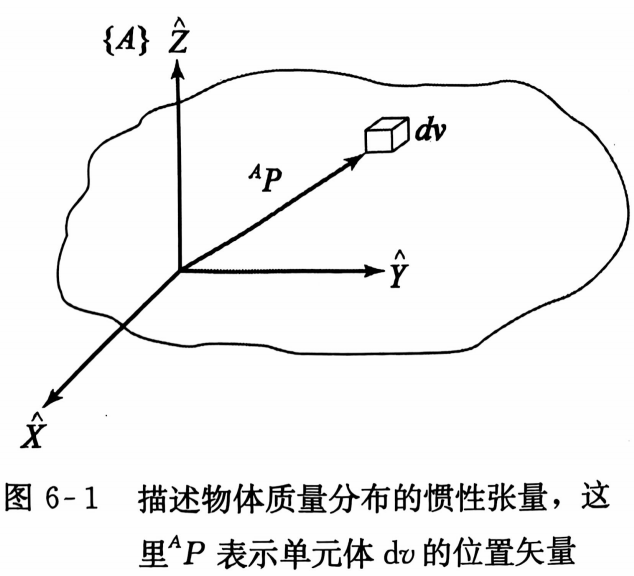
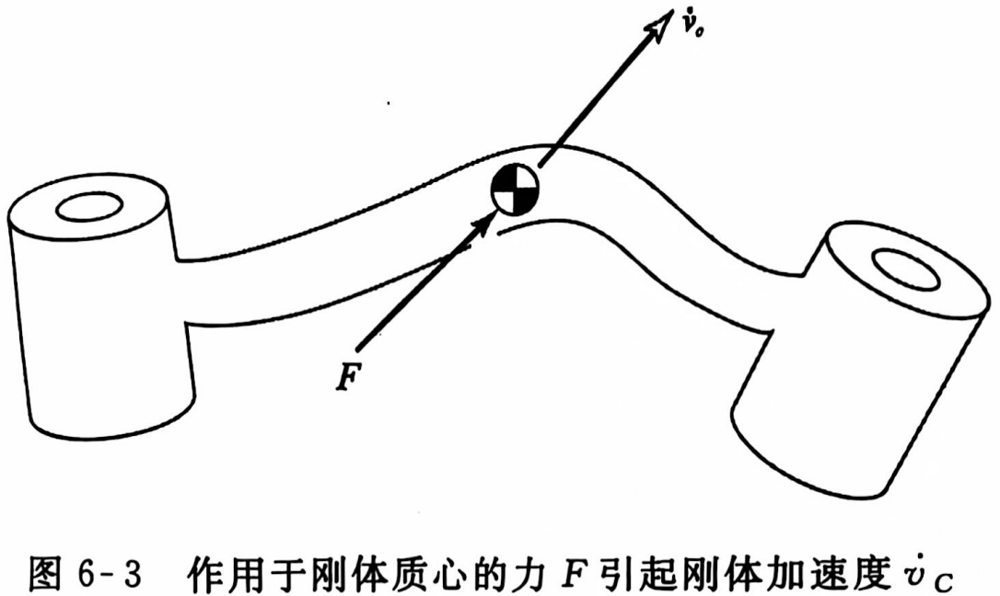
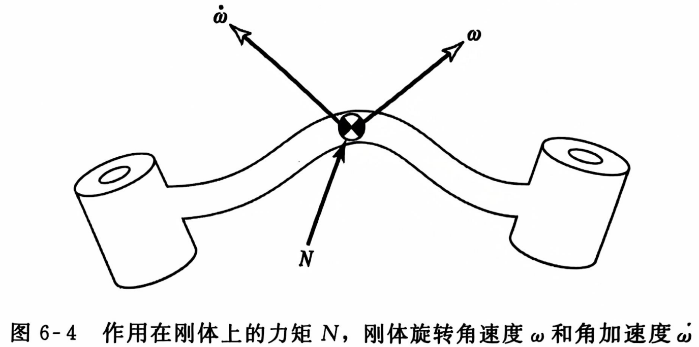
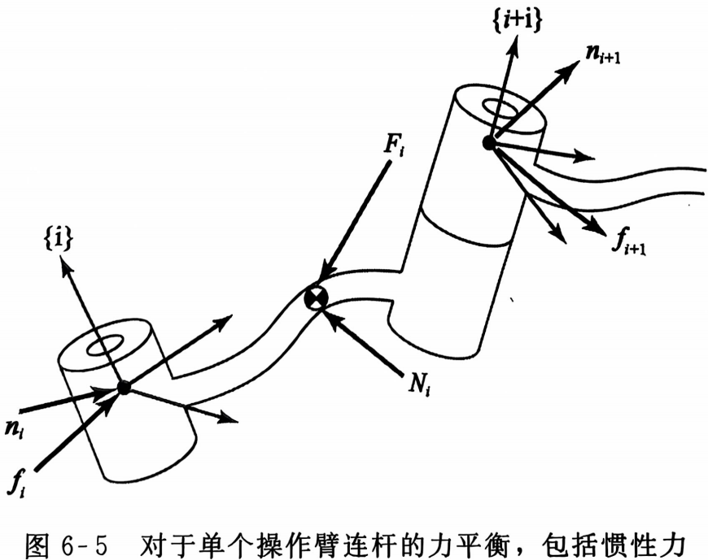
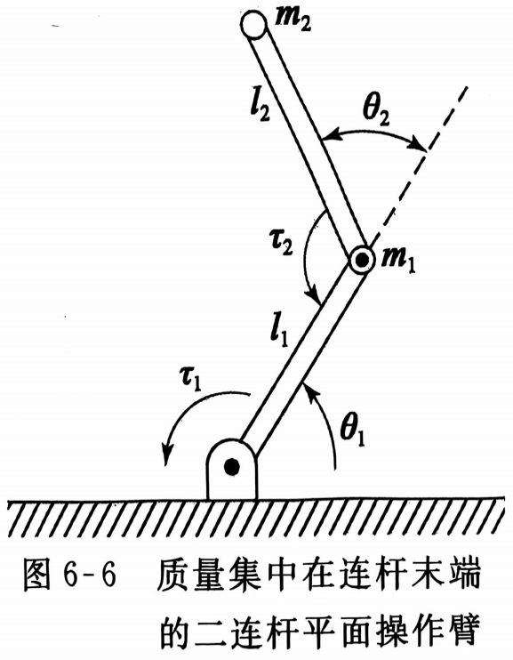

操作臂动力学
刚体的加速度
对刚体的线速度和角速度进行求导分别得到线加速度和角加速度：
$^B\dot{V}_Q=\frac{\mathrm{d}}{\mathrm{d}t}^BV_Q=\lim_{\Delta t\rightarrow0}\frac{^BV_Q(t+\Delta t)-^BV_Q(t)}{\Delta t}$
$^A\dot{\Omega}_B=\frac{\mathrm{d}}{\mathrm{d}t}^A\Omega_B=\lim_{\Delta t\rightarrow0}\frac{^A\Omega_B(t+\Delta t)-^A\Omega_B(t)}{\Delta t}$
当刚体所处的瞬时参考坐标系为世界坐标系$\{U\}$时，可用下列符号表示：
$\dot{v}_a=^U\dot{V}_AORG$
$\dot{\omega}_A=^U\dot{\Omega}_A$
线加速度
应用第五章所得公式：
$^AV_Q=^AV_{BORG}+^A_BR^BV_Q+^A\Omega_B\times^A_BR^BQ$
当$\{A\}$与$\{B\}$原点重合：
$^AV_Q=\frac{\mathrm{d}}{\mathrm{d}t}(^A_BR^BQ)=^A_BR^BV_Q+^A\Omega_B\times^A_BR^BQ$①
对上式求导：
$^A\dot{V}_Q=\frac{\mathrm{d}}{\mathrm{d}t}(^A_BR^BQ)+^A\dot{\Omega}_B\times^A_BR^BQ+^A\Omega_B\times\frac{\mathrm{d}}{\mathrm{d}t}(^A_BR^BQ)$
$=^A_BR^B\dot{V}_Q+^A\Omega_B\times^A_BR^BV_Q+^A\dot{\Omega}_B\times^A_BR^BQ+^A\Omega_B\times(^A_BR^BV_Q+^A\Omega_B\times^A_BR^BQ)$
$=^A_BR^B\dot{V}_Q+2^A\Omega_B\times^A_BR^BV_Q+^A\dot{\Omega}_B\times^A_BR^BQ+^A\Omega_B\times(^A\Omega_B\times^A_BR^BQ)$
再考虑原点不重合的情况，加上$\{B\}$原点的加速度：
$^A\dot{V}_Q=^A\dot{V}_{BORG}+^A_BR^B\dot{V}_Q+2^A\Omega_B\times^A_BR^BV_Q+^A\dot{\Omega}_B\times^A_BR^BQ+^A\Omega_B\times(^A\Omega_B\times^A_BR^BQ)$②
上式为求解加速度的一般公式。
当计算旋转关节操作臂连杆线加速度时，$^BQ$为常量，即：
$^BV_Q=^B\dot{V}_Q=0$
此时②简化为：
$^A\dot{V}_Q=^A\dot{V}_{BORG}+^A\dot{\Omega}_B\times^A_BR^BQ+^A\Omega_B\times(^A\Omega_B\times^A_BR^BQ)$③
角加速度
假设$\{B\}$以$^A\Omega_B$相对于$\{A\}$转动，同时$\{C\}$以$^B\Omega_C$相对于$\{B\}$转动，则：
$^A\Omega_C=^A\Omega_B+^A_BR^B\Omega_C$
对上式求导：
$^A\dot{\Omega}_C=^A\dot{\Omega}_B+\frac{\mathrm{d}}{\mathrm{d}t}(^A_BR^B\Omega_C)$
最后一项用$^B\Omega_C$代入①中$^BQ$：
$^A\dot{\Omega}_C=^A\dot{\Omega}_B+^A_BR^B\dot{\Omega}_C+^A\Omega_B\times^A_BR^B\Omega_C$④
上式用于计算操作臂连杆的角加速度。
质量分布
对一个可以在三维空间自由移动的刚体来说可能存在无穷个旋转轴。在一个刚体绕任意轴做旋转运动时，我们需要一种能够表征刚体质量分布的方式。我们引入惯性张量，可以看做是对一个物体惯性矩的广义度量。
惯性张量可以在任何坐标系中定义，但一般在刚体自身坐标系中定义，用左上标表明已知惯性张量所在的坐标系。$\{A\}$中的惯性张量可用$3\times3$矩阵表示如下：
$^AI=\begin{bmatrix}I_{xx}&-I_{xy}&-I_{xz}\\-I_{xy}&I_{yy}&-I_{yz}\\-I_{xz}&-I_{yz}&I_{zz}\end{bmatrix}$
矩阵中各元素为：
$I_{xx}=\iiint_V(y^2+z^2)\rho\mathrm{d}v$
$I_{yy}=\iiint_V(x^2+z^2)\rho\mathrm{d}v$
$I_{zz}=\iiint_V(x^2+y^2)\rho\mathrm{d}v$
$I_{xy}=\iiint_Vxy\rho\mathrm{d}v$
$I_{xz}=\iiint_Vxz\rho\mathrm{d}v$
$I_{yz}=\iiint_Vyz\rho\mathrm{d}v$
式中刚体由单元体$\mathrm{d}v$组成，单元体的密度为$\rho$，每个单元体的位置由矢量$^AP=(x,y,z)^T$确定。
$I_{xx}$、$I_{yy}$和$I_{zz}$称为惯性矩，其余三个交叉项称为惯量积。对一个刚体来说，该六个相互独立的参量取决于所在坐标系的位置和姿态。当选择的坐标系姿态使刚体的惯量积为零时，该坐标系的轴被称为主轴，而相应的惯量矩被称为主惯性矩。
平行移轴定理描述了一个以刚体质心为原点的坐标系平移到另一个坐标系时惯性张量的变换关系。假设$\{C\}$是以刚体质心为原点的坐标系，$\{A\}$为任意平移后的坐标系，则平行移轴定理可以表示为：
$^AI_{zz}=^CI_{zz}+m(x^2_c+y^2_c)$
$^AI_{xy}=^CI_{xy}-mx_cy_c$
式中矢量$P_c=(x_c,y_c,z_c)^T$表示刚体质心在$\{A\}$中的位置，其余轴下标的变换公式同理。
平行移轴定理的矢量-矩阵形式为：
$^AI=^CI+m(P^T_cP_cI_3-P_cP_c^T)$
式中$I_3$为$3\times3$单位矩阵。
惯性张量的其他性质：
- 如果坐标系的两个坐标轴构成的平面为刚体质量分布的对称平面，则第三个坐标轴与这两个坐标轴的惯性积为零。
- 三个惯量矩的和与参考坐标系的姿态无关。
- 惯性张量的特征值为刚体的主惯性矩，特征矢量为主轴。
大多数操作臂连杆的几何形状及结构组成都比较复杂，因而很难直接应用公式求解，一般使用测量装置来测量每个连杆的惯性矩。
牛顿-欧拉方程递推动力学方程
牛顿方程和欧拉方程
牛顿方程以及描述旋转运动的欧拉方程描述了力、惯量和加速度之间的关系。
牛顿方程
$F=m\dot{v}_c$
$F$：作用在质心上的力；
$m$：刚体的总质量；
$\dot{v}_c$：刚体质心的加速度。
欧拉方程
$N=^CI\dot{\omega}+\omega\times^CI\omega$
$N$：作用在刚体上的力矩；
$^CI$：刚体在$\{C\}$中的惯性张量，$\{C\}$的原点在质心；
$\omega$和$\dot{\omega}$：刚体旋转的角速度和角加速度。
计算速度和加速度的外推法
为了计算作用在连杆上的惯性力，需要计算操作臂每个连杆质心在某一时刻的角速度、线加速度和角加速度。可应用递推方法完成这些计算，首先对连杆$1$进行计算，接着计算下一个连杆，一直外推到连杆$n$。
第五章机器人连杆的运动中我们给出了角速度在连杆之间的传播方程：
$^{i+1}\omega_{i+1}=^{i+1}_{i}R^i\omega_i+\dot{\theta}_{i+1}{}^{i+1}\hat{Z}_{i+1}$
本章④给出了连杆之间角加速度变换的方程：
$^{i+1}\dot{\omega}_{i+1}=^{i+1}_iR^i\dot{\omega}_i+^{i+1}_iR^i\omega_i\times\dot{\theta}_{i+1}\hat{Z}_{i+1}+\ddot{\theta}_{i+1}{}^{i+1}\hat{Z}_{i+1}$
当第$i+1$个关节为移动关节时，上式可简化为：
$^{i+1}\dot{\omega}_{i+1}=^{i+1}_{i}R^i\dot{\omega}_i$
本章③可得到每个连杆坐标系原点的线加速度：
$^{i+1}\dot{v}_{i+1}=^{i+1}_iR[^i\dot{\omega}_i\times^iP_{i+1}+^i\omega_i\times(^i\omega_i\times^iP_{i+1})+^i\dot{v}_i]$
当第$i+1$个关节为移动关节时，上式变为②：
$^{i+1}\dot{v}_{i+1}=^{i+1}_iR[^i\dot{\omega}_i\times^iP_{i+1}+^i\omega_i\times(^i\omega_i\times^iP_{i+1})+^i\dot{v}_i]+2^{i+1}\omega_{i+1}\times\dot{d}_{i+1}{}^{i+1}\hat{Z}_{i+1}+\ddot{d}_{i+1}{}^{i+1}\hat{Z}_{i+1}$
同理用③可得到每个连杆质心的线加速度：
$^i\dot{v}_{C_i}=^i\dot{\omega}_i\times^iP_{C_i}+^i\omega_i\times(^i\omega_i\times^iP_{C_i})+^i\dot{v}_i$
其中$\{C_i\}$原点位于连杆质心，姿态与$\{i\}$相同。
作用在连杆上的力和力矩
计算出每个连杆质心的线加速度和角加速度之后，运用牛顿-欧拉公式可以计算出作用在连杆质心上的惯性力和力矩：
$F_i=m\dot{v}_{C_i}$
$N_i=^{C_i}I\dot{\omega}_i+\omega_i\times^{C_i}I\omega_i$
计算力和力矩的内推法
计算出每个连杆上的作用力和力矩之后，需要计算这些产生施加在连杆上的力和力矩所对应的关节力矩。
第五章操作臂的静力一节中定义了：
$f_i=$连杆$i-1$作用在连杆$i$上的力；
$n_i=$连杆$i-1$作用在连杆$i$上的力矩。
则作用在连杆$i$上的合力：
$^iF_i=^if_i-^i_{i+1}R^{i+1}f_{i+1}$⑤
作用在连杆质心上的合力矩：
$^iN_i=^in_i-^in_{i+1}+(-^iP_{C_i})\times^if_i-(^iP_{i+1}-^iP_{C_i})\times^if_{i+1}$
利用⑤和旋转矩阵变换上式可写成：
$^iN_i=^in_i-^i_{i+1}R^{i+1}n_{i+1}-^iP_{C_i}\times^iF_i-^iP_{i+1}\times^i_{i+1}R^{i+1}f_{i+1}$
最后重新排列力和力矩方程形成相邻连杆从高序号向低序号的迭代关系：
$^if_i=^i_{i+1}R^{i+1}f_{i+1}+^iF_i$
$^in_i=^iN_i+^i_{i+1}R^{i+1}n_{i+1}+^iP_{C_i}\times^iF_i+^iP_{i+1}\times^i_{i+1}R^{i+1}f_{i+1}$
应用这些方程从连杆$n$开始向内递推到机器人基座依次求解。
最终由第五章操作臂的静力一节给出关节驱动力为：
$\tau_i=^in_i^T{}^i\hat{Z}_i$
对于移动关节：
$\tau_i=^if_i^T{}^i\hat{Z}_i$
牛顿-欧拉递推动力学算法
由关节运动计算关节力矩的完整算法由两部分组成：第一部分是对每个连杆应用牛顿-欧拉方程从连杆$1$到连杆$n$向外递推计算连杆的速度和加速度；第二部分是从连杆$n$到连杆$1$跌倒计算连杆间的相互作用力和力矩以及关节驱动力矩。对于转动关节，该算法归纳如下：
外推：
$^{i+1}\omega_{i+1}=^{i+1}_{i}R^i\omega_i+\dot{\theta}_{i+1}{}^{i+1}\hat{Z}_{i+1}$
$^{i+1}\dot{\omega}_{i+1}=^{i+1}_iR^i\dot{\omega}_i+^{i+1}_iR^i\omega_i\times\dot{\theta}_{i+1}\hat{Z}_{i+1}+\ddot{\theta}_{i+1}{}^{i+1}\hat{Z}_{i+1}$
$^{i+1}\dot{v}_{i+1}=^{i+1}_iR[^i\dot{\omega}_i\times^iP_{i+1}+^i\omega_i\times(^i\omega_i\times^iP_{i+1})+^i\dot{v}_i]$
$^{i+1}\dot{v}_{C_{i+1}}=^{i+1}\dot{\omega}_{i+1}\times^{i+1}P_{C_{i+1}}+^{i+1}\omega_{i+1}\times(^{i+1}\omega_{i+1}\times^{i+1}P_{C_{i+1}})+^{i+1}\dot{v}_{i+1}$
$F_{i+1}=m\dot{v}_{C_{i+1}}$
$N_{i+1}=^{C_{i+1}}I\dot{\omega}_{i+1}+\omega_{i+1}\times^{C_{i+1}}I\omega_{i+1}$
内推：
$^if_i=^i_{i+1}R^{i+1}f_{i+1}+^iF_i$
$^in_i=^iN_i+^i_{i+1}R^{i+1}n_{i+1}+^iP_{C_i}\times^iF_i+^iP_{i+1}\times^i_{i+1}R^{i+1}f_{i+1}$
$\tau_i=^in_i^T{}^i\hat{Z}_i$
考虑重力的动力学算法
令$^0\dot{v}_0=G$即可将作用在连杆上的重力因素包括到动力学方程中去，其中$G$与重力矢量等大反向。
操作臂动力学方程的结构
迭代形式与封闭形式
上述动力学方程主要应用于数值计算（迭代形式）或作为分析方法用于符号方程的推导（封闭形式）。
对于数值计算，只要将待求操作臂的惯性张量、连杆质量、连杆质心位置矢量和相邻连杆的旋转矩阵代入这些方程中即可计算出任何运动情况下的关节力矩。
当需要对方程的结构进行研究，例如重力项的形式、重力和惯性力的影响效果等，就要给出封闭形式的动力学方程。
一个如图所示的RR操作臂，为简单起见假设每个连杆的质量都集中在连杆的末端，应用上述方程得到的封闭形式的动力学方程如下：
$\tau_1=m_2l_2^2(\ddot{\theta}_1+\ddot{\theta}_2)+m_2l_1l_2c_2(2\ddot{\theta}_1+\ddot{\theta}_2)+(m_1+m_2)l^2_1\ddot{\theta}_1-m_2l_1l_2s_2\dot{\theta}_2^2-2m_2l_1l_2s_2\dot{\theta}_1\dot{\theta}_2+m_2l_2gc_{12}+(m_1+m_2)l_1gc_1$
$\tau_2=m_2l_1l_2c_2\ddot{\theta}_1+m_2l_1l_2s_2\dot{\theta}^2_1+m_2l_2gc_{12}+m_2l^2_2(\ddot{\theta}_1+\ddot{\theta}_2)$
如此复杂的函数表达式描述的只是一个最简单的操作臂，可见一个封闭形式的六自由度操作臂的动力学方程是相当复杂的。
状态空间方程
忽略一个方程中的某些细节而仅显示方程的某些结构可以很方便地表示操作臂的动力学方程。
用牛顿-欧拉方程对操作臂进行分析时，动力学方程可写成如下形式：
$\tau=M(\Theta)\ddot{\Theta}+V(\Theta,\dot{\Theta})+G(\Theta)$
式中$M(\Theta)$为操作臂的$n\times n$质量矩阵，$V(\Theta,\dot{\Theta})$为$n\times1$的离心力和科氏力矢量，$G(\Theta)$是$n\times1$重力矢量。上式称为状态空间方程，因为矢量$V(\Theta,\dot{\Theta})$取决于位置和速度。
以上面给出的RR操作臂为例：
$\tau=\begin{bmatrix}\tau_1\\\tau_2\end{bmatrix},\ddot{\Theta}=\begin{bmatrix}\ddot{\theta}_1\\\ddot{\theta}_2\end{bmatrix}$
质量矩阵$M(\Theta)$的所有各项均为$\Theta$的函数并与$\ddot{\Theta}$相乘：
$M(\Theta)=\begin{bmatrix}l^2_2+2l_1l_2m_2c_2+l_1^2(m_1+m_2)&l^2_2m_2+l_1l_2m_2c_2\\l^2_2m_2+l_1l_2m_2c_2&l^2_2m_2\end{bmatrix}$
速度项$V(\Theta,\dot{\Theta})$包含了所有与关节速度有关的项：
$V(\Theta,\dot{\Theta})=\begin{bmatrix}-m_2l_1l_2s_2\dot{\theta}^2_2-2m_2l_1l_2s_2\dot{\theta}_1\dot{\theta}_2\\m_2l_1l_2s_2\dot{\theta}^2_1\end{bmatrix}$
$-m_2l_1l_2s_2\dot{\theta}^2_1$是与离心力有关的项，因为它是关节速度的平方；
$-2m_2l_1l_2s_2\dot{\theta}_1\dot{\theta}_2$是与科氏力有关的项，因为它总是包含两个不同关节速度的乘积。
重力项$G(\Theta)$包含了所有与重力加速度$g$有关的项：
$G(\Theta)=\begin{bmatrix}m_2l_2gc_{12}+(m_1+m_2)l_1gc_1\\m_2l_2gc_{12}\end{bmatrix}$
位形空间方程
将动力学方程中速度项$V(\Theta,\dot{\Theta})$离心力和科氏力拆开来，并提取出关节速度项，写成另外一种形式如下：
$\tau=M(\Theta)\ddot{\Theta}+B(\Theta)(\dot{\Theta}\dot{\Theta})+C(\Theta)(\dot{\Theta}^2)+G(\Theta)$⑥
式中$B(\Theta)$为$n\times n(n-1)/2$阶科氏力系数矩阵，$(\dot{\Theta}\dot{\Theta})$是$n(n-1)/2\times1$阶关节速度矢量，即：
$(\dot{\Theta}\dot{\Theta})=(\dot{\theta}_1\dot{\theta}_2,\dot{\theta}_1\dot{\theta}_3,\cdots,\dot{\theta}_{n-1}\dot{\theta}_n)^T$
$C(\Theta)$是$n\times n$阶离心力系数矩阵，$(\dot{\Theta}^2)$是$n\times1$阶矢量，即：
$(\dot{\Theta}^2)=(\dot{\theta}^2_1,\dot{\theta}^2_2,\cdots,\dot{\theta}^2_n)T$
⑥称为位形空间方程，因为它的系数矩阵仅是操作臂位置的函数。
以上面给出的RR操作臂为例：
$(\dot{\Theta}\dot{\Theta})=(\dot{\theta}_1\dot{\theta}_2),(\dot{\Theta}^2)=\begin{bmatrix}\dot{\theta}^2_1\\\dot{\theta}^2_2\end{bmatrix}$
$B(\Theta)=\begin{bmatrix}-2m_2l_1l_2s_2\\0\end{bmatrix}$
$C(\Theta)=\begin{bmatrix}0&-m_2l_1l_2s_2\\m_2l_1l_2s_2&0\end{bmatrix}$
操作臂动力学的拉格朗日方程
牛顿-欧拉公式是一种解决动力学问题的力平衡方法，而拉格朗日公式则是一种基于能量的动力学方法。对于同一个操作臂来说，两种方法得到的动力学方程式相同的。
第$i$个连杆的动能$k_i$可以表示为：
$k_i=\frac{1}{2}m_iv^T_{C_i}v_{C_i}+\frac{1}{2}{}^i\omega^T_i{}^{C_i}I_i{}^i\omega_i$
式中第一项是连杆质心线速度动能，第二项是连杆角速度动能。整个操作臂的动能是各个连杆动能之和：
$k=\Sigma^n_{i=1}k_i$
式中$v_{C_i}$和$^i\omega_i$是$\Theta$和$\dot{\Theta}$的函数，因此操作臂的动能$k$可描述为关节位置和速度的标量函数：
$k(\Theta,\dot{\Theta})=\frac{1}{2}\dot{\Theta}^TM(\Theta)\dot{\Theta}$
这里$M(\Theta)$为状态空间方程中介绍的$n\times n$质量矩阵。
第$i$个连杆的势能$u_i$可以表示为：
$u_i=-m_i{}^0g^T{}^0P_{C_i}+u_{ref_i}$
这里$^0g$是$3\times1$重力矢量，$^0P_{C_i}$是位于第$i$个连杆质心的矢量，$u_{ref_i}$是使$u_i$的最小值为零的常数（即最小取到势能零点，实际上可以相对于任意一个参考零点）。操作臂的总势能为各个连杆势能之和：
$u=\Sigma^n_{i=1}u_i$
式中$^0P_{C_i}$是$\Theta$的函数，因此操作臂的势能$u$可以描述为关节位置的标量函数。
拉格朗日力学公式给出了一种从标量函数推导动力学方程的方法，该标量函数称为拉格朗日函数，即一个机械系统的动能和势能的差值：
$\mathcal{L}(\Theta,\dot{\Theta})=k(\Theta,\dot{\Theta})-u(\Theta)$
则操作臂的运动方程为：
$\frac{\mathrm{d}}{\mathrm{d}t}\frac{\partial\mathcal{L}}{\partial\dot{\Theta}}-\frac{\partial\mathcal{L}}{\partial\Theta}=\frac{\mathrm{d}}{\mathrm{d}t}\frac{\partial k}{\partial\dot{\Theta}}-\frac{\partial k}{\partial\Theta}+\frac{\partial u}{\partial\Theta}=\tau$
笛卡尔空间中的操作臂动力学
笛卡尔状态空间方程
已知关节变量建立的状态空间方程为：
$\tau=M(\Theta)\ddot{\Theta}+V(\Theta,\dot{\Theta})+G(\Theta)$⑦
在操作臂控制当中，有时我们希望用笛卡尔变量的一般形式建立操作臂动力学方程：
$\mathcal{F}=M_x(\Theta)\ddot{\chi}+V_x(\Theta,\dot{\Theta})+G_x(\Theta)$
式中$\mathcal{F}$是作用于机器人末端执行器上的力-力矩矢量，$\chi$是表达末端执行器位置和姿态的笛卡尔矢量。
与关节空间相对应，$M_x(\Theta)$是笛卡尔质量矩阵，$V_x(\Theta,\dot{\Theta})$是笛卡尔空间中的速度项矢量，$G_x(\Theta)$是笛卡尔空间中的重力项矢量。
在第五章力域中的雅可比一节中有：
$\tau=J^T(\Theta)\mathcal{F}$⑧
其中$J(\Theta)$与$\mathcal{F}$和$\chi$在同一个笛卡尔坐标系下。
接下来推导关节变量与笛卡尔变量的状态空间方程之间的关系：
对⑦两边同乘$J^{-T}$并结合⑧得到：
$J^{-T}\tau=\mathcal{F}=J^{-T}M(\Theta)\ddot{\Theta}+J^{-T}V(\Theta,\dot{\Theta})+J^{-T}G(\Theta)$⑨
又由雅可比矩阵的定义得：
$\dot{\chi}=J\dot{\Theta}$
两边求导：
$\ddot{\chi}=\dot{J}\dot{\Theta}+J\ddot{\Theta}$
$\ddot{\Theta}=J^{-1}\ddot{\chi}-J^{-1}\dot{J}\dot{\Theta}$
将上式代入⑨得：
$\mathcal{F}=J^{-T}M(\Theta)J^{-1}\ddot{\chi}-J^{-T}M(\Theta)J^{-1}\dot{J}\dot{\Theta}+J^{-T}V(\Theta,\dot{\Theta})+J^{-T}G(\Theta)$
由此得出笛卡尔空间动力学方程中各项的表达式：
$M_x(\Theta)=J^{-T}(\Theta)M(\Theta)J^{-1}(\Theta)$
$V_x(\Theta,\dot{\Theta})=J^{-T}(\Theta)(V(\Theta,\dot{\Theta})-M(\Theta)J^{-1}(\Theta)\dot{J}(\Theta)\dot{\Theta})$
$G_x(\Theta)=J^{-T}(\Theta)G(\Theta)$
笛卡尔位形空间中的力矩方程
用笛卡尔空间动力学方程写出等价的关节力矩：
$\tau=J^T(\Theta)(M_x(\Theta)\ddot{\chi}+V_x(\Theta,\dot{\Theta})+G_x(\Theta))$
按与⑥类似的思路将上式改写为位形空间方程得：
$\tau=J^T(\Theta)M_x(\Theta)\ddot{\chi}+B_x(\Theta)(\dot{\Theta}\dot{\Theta})+C_x(\Theta)(\dot{\Theta}^2)+G(\Theta)$
式中$B_x(\Theta)$是$n\times n(n-1)/2$阶科氏力系数矩阵，$(\dot{\Theta}\dot{\Theta})$是$n(n-1)/2\times1$阶关节速度矢量，即：
$(\dot{\Theta}\dot{\Theta})=(\dot{\theta}_1\dot{\theta}_2,\dot{\theta}_1\dot{\theta}_3,\cdots,\dot{\theta}_{n-1}\dot{\theta}_n)^T$
$C_x(\Theta)$是$n\times n$阶离心力系数矩阵，$(\dot{\Theta}^2)$是$n\times1$阶矢量，即：
$(\dot{\Theta}^2)=(\dot{\theta}^2_1,\dot{\theta}^2_2,\cdots,\dot{\theta}^2_n)T$
$G(\Theta)$与关节空间方程中的相同，但一般情况下$B_x(\Theta)\neq B(\Theta),C_x(\Theta)\neq C(\Theta)$。
考虑非刚体影响
我们推导出的动力学方程没有包含摩擦力。
最简单的摩擦力模型为粘性摩擦力，摩擦力矩与关节运动速度成正比：
$\tau_{friction}=v\dot{\theta}$
式中$v$是粘性摩擦系数。
有时应用另一个简单的摩擦力模型，就是库伦摩擦。库伦摩擦是一个常数，它的符号取决于关节速度：
$\tau_{friction}=c\mathrm{sgn}(\dot{\theta})$
式中$c$是库伦摩擦系数。当$\dot{\theta}=0$，$c$一般取$1$，称为静摩擦系数；当$\dot{\theta}\neq0$，$c<1$，称为动摩擦系数。
（书中给出的公式及其解释博主未能理解，但根据定义，库伦摩擦即静摩擦定律和滑动摩擦定律的结合）
比较合理的模型是二者兼顾：
$\tau_{friction}=c\mathrm{sgn}(\dot{\theta})+v\dot{\theta}$
在许多操作臂关节中，摩擦力也与节点位置有关。主要原因是齿轮不是理想圆，齿轮的偏心会导致摩擦力随关节位置而变化，因此一个比较复杂的摩擦力模型为：
$\tau_{friction}=f(\theta,\dot{\theta})$
将其附加到刚体力学模型的动力学方程中得到一个更完整的模型：
$\tau=M(\Theta)\ddot{\Theta}+V(\Theta,\dot{\Theta})+G(\Theta)+F(\Theta,\dot{\Theta})$
还有其他一些影响因素，例如连杆弯曲效应引起谐振等，但是这些因素建模十分复杂，暂不讨论。
本章完